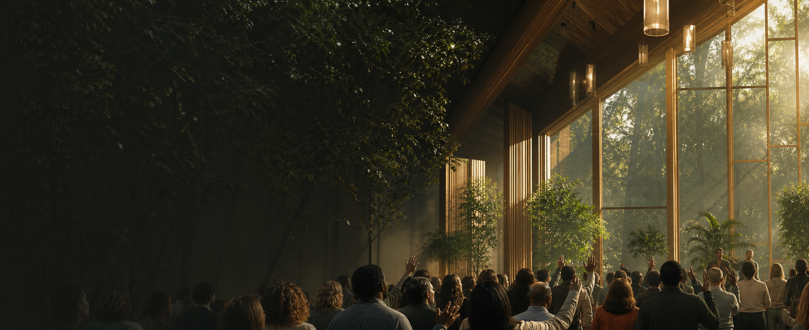

Rooted in God’s presence
Prayer, worship and Scripture cultivate a life attentive to God and responsive to His leading.

Welcome to The GreenHouse
We are building a thoughtful, Christ-centred community where truth renews the mind, purpose becomes clear, and every life is cultivated for Kingdom influence.
More than a gathering
The GreenHouse Assembly is a Christian formation movement for people who want faith to shape the whole of life. We make room for Scripture, prayer, worship, wise relationships and disciplined growth.
Our vision reaches beyond attendance. We want people to know God deeply, think with clarity, live with purpose, serve with excellence and carry life into the places they have been called to influence.
Read our storyThe GreenHouse journey
Formation is not accidental. These five movements describe how truth becomes a life of mature influence.
Encounter God through Scripture, the Gospel and the wisdom of His Kingdom.
Let truth renew your mind, form your character and reorder your desires.
Grow within a community of worship, honesty, encouragement and care.
Offer your gifts with humility, excellence and responsibility.
Carry Kingdom wisdom into family, work, creativity, leadership and culture.
Whole-life discipleship
Prayer, worship and Scripture cultivate a life attentive to God and responsive to His leading.
We value biblical understanding, disciplined thought and the courage to see life through the truth of Christ.
Formation reaches habits, relationships, work, stewardship and the practical ways we love our neighbours.
Find your next step
Explore the places where formation becomes learning, community and faithful action.
Explore biblical learning, spiritual formation and Kingdom wisdom.
Enter the teaching library → BelongDiscover pathways for every generation to grow, connect and serve.
Explore ministries → Flagship resourceA theological manifesto on conscious force, transformation and creative dominion by Good Idawari.
Discover the book → GatherFind guidance for connecting with current gatherings across our social platforms.
Join us online →What we are cultivating
People of truth and presence. Minds renewed by wisdom. Leaders formed before visibility. Creators who build with purpose. A community whose growth becomes life for others.
Your journey can begin here
Whether you are exploring faith, rebuilding foundations or ready to serve with greater clarity, The GreenHouse is being shaped as a place for your next faithful step.